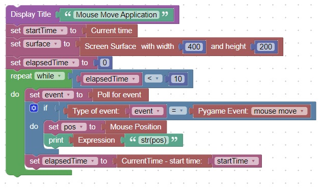
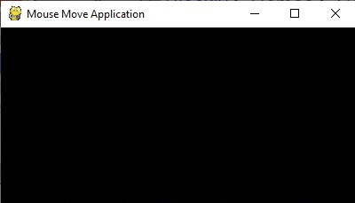
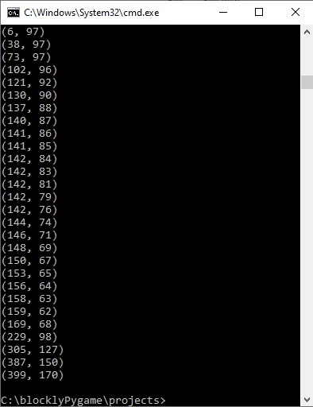

<h1>Mouse Move</h1>
This code will show the mouse position for 10 seconds.<br>
<br>
Here is what the screen looks like<br>
<br>
This is what the line terminal looks like<br>
<br>
<hr>
<center></center>